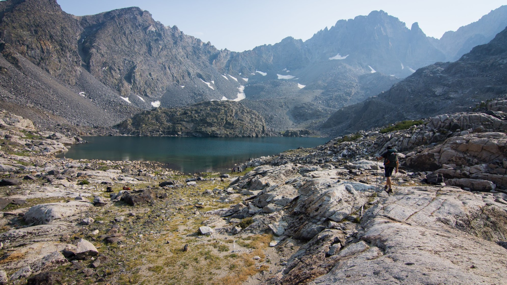

Tamarack Lakes

Mount Whitney


Hobbies
I enjoy travelling and exploring the world in general. Hiking, camping, and backpacking are some of my favorite activities since they intrinsically involve travelling. In addition, I also actively partake in photgraphy - primarily by carrying equipment around and occasionally being a prop/model. My (over-)enthusiastic girlfriend is the one actually taking the pictures and processing them. But, in all honesty, photography is not a one-person job. It really takes a team of two to discuss the composition and setting of a photo in order to get the best pictures. Here are a few of my favorite pictures/trips over the years.
Yubeng

Redwoods

Other
In addition to travelling and photography, I also help foster kittens when the animal shelters are full. In the past, when there was more time, I would volunteer for the Boy Scouts of America. As part of Sixth College Student Council, I would host these huge events that celebrate video-game culture called Winter GameFest.